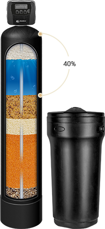

<section class="section-specefication">

    <div class="container section-specefication__container">
        <div class="section-specefication__right">

        <div class="c-section-specs__info" id="section-specs">
            <div class="c-section__head">
                <h2 class="section-right__title page-title">Характеристики ProMix</h2>
            </div>
            <div class="c-tabs js-tabs c-tabs-loaded">
                <div class="c-tabs__nav">
                    <ul class="ul-item">
                        <li class="li-item"><a class="c-tabs__link is-active" href="#tab-1">Требования к воде</a></li>
                        <li><a class="c-tabs__link" href="#tab-2"><span>Условия эксплуатации</span></a></li>
                    </ul>
                </div>
                <div class="c-tabs__content">
                    <div class="c-section-specs__inner">
                        <div class="c-section-specs__left">
                            <div class="c-tabs__tab" id="tab-1">
                                <div class="c-table-wrapper">
                                    <table class="c-section-specs__table">
                                        <tbody>
                                            <tr>
                                                <td class="is-first">Температура исходной воды, ºC</td>
                                                <td>2 - 45</td>
                                            </tr>
                                            <tr>
                                                <td class="is-first">Водородный показатель исходной воды, pH</td>
                                                <td>5 - 9</td>
                                            </tr>
                                            <tr>
                                                <td class="is-first">Железо (Fe, суммарно), мг/л</td>
                                                <td>≤ 15</td>
                                            </tr>
                                            <tr>
                                                <td class="is-first">Марганец (Mn), мг/л</td>
                                                <td>≤ 3</td>
                                            </tr>
                                            <tr>
                                                <td class="is-first">Жёсткость общая, мг-экв/л</td>
                                                <td>≤ 15</td>
                                            </tr>
                                            <tr>
                                                <td class="is-first">Аммоний, мг/л</td>
                                                <td>≤ 4</td>
                                            </tr>
                                            <tr>
                                                <td class="is-first">Сероводород</td>
                                                <td>Не оказывает влияния</td>
                                            </tr>
                                            <tr>
                                                <td class="is-first">Нефтепродукты</td>
                                                <td>отсутствие</td>
                                            </tr>
                                            <tr>
                                                <td class="is-first">Активный хлор, мг/л</td>
                                                <td>≤ 0,5</td>
                                            </tr>
                                        </tbody>
                                    </table>
                                </div>
                            </div>
                            <div class="c-tabs__tab" id="tab-2" style="display: none;">
                                <div class="c-section-specs__cond">
                                    <div class="c-table-wrapper">
                                        <table class="c-section-specs__table">
                                            <tbody>
                                                <tr>
                                                    <td class="is-first">Скорость фильтрации, м/час</td>
                                                    <td colspan="3">8 - 25</td>
                                                </tr>
                                                <tr>
                                                    <td class="is-first">Скорость обратной промывки, м/час</td>
                                                    <td colspan="3">10 - 15</td>
                                                </tr>
                                                <tr>
                                                    <td class="is-first">Скорость регенерации (промывка солью), м/час</td>
                                                    <td colspan="3">3 - 5</td>
                                                </tr>
                                                <tr>
                                                    <td class="is-first">Минимальная высота слоя, мм</td>
                                                    <td colspan="3">500</td>
                                                </tr>
                                                <tr>
                                                    <td class="is-first">Оптимальная высота слоя, мм</td>
                                                    <td colspan="3">800</td>
                                                </tr>
                                                <tr>
                                                    <td class="is-first">Свободный объём, об.%</td>
                                                    <td colspan="3">30 - 40</td>
                                                </tr>
                                                <tr>
                                                    <td class="is-first">Расход соли, г/л</td>
                                                    <td colspan="3">100 - 120</td>
                                                </tr>
                                                <tr>
                                                    <td class="is-first">Концентрация солевого раствора, масс.%</td>
                                                    <td colspan="3">8 - 12</td>
                                                </tr>
                                                <tr>
                                                    <td class="is-first">Расход воды на промывку, л/л</td>
                                                    <td colspan="3">10</td>
                                                </tr>
                                            </tbody>
                                        </table>
                                    </div>
                                    <div class="c-table-wrapper">
                                        <table class="c-section-specs__table">
                                            <tbody>
                                                <tr>
                                                    <th class="is-first">&nbsp;</th>
                                                    <th>Тип A</th>
                                                    <th>Тип B</th>
                                                    <th>Тип C</th>
                                                </tr>
                                                <tr>
                                                    <td class="is-first">Перманганатная окисляемость воды, мгО<sub>2</sub>/л, не более</td>
                                                    <td class="h-text-center">10</td>
                                                    <td class="h-text-center">3</td>
                                                    <td class="h-text-center">20</td>
                                                </tr>
                                                <tr>
                                                    <td class="is-first">Рабочая обменная ёмкость, г-экв/л</td>
                                                    <td class="h-text-center">0,7</td>
                                                    <td class="h-text-center">0,8</td>
                                                    <td class="h-text-center">0,6</td>
                                                </tr>
                                            </tbody>
                                        </table>
                                    </div>
                                </div>
                            </div>
                        </div>
                    </div>
                </div>
            </div>
        </div>
    </div>
    <!-- ./section-specefication__right -->

        <div class="section-specefication__left">
            <!-- First block start -->
            <div class="section-specefication__block block-components">
                <p class="section-specefication__left info-components">
                    Оптимальная высота слоя 800 мм                </p>
                
            </div>
            <!-- First block end -->

            <!-- Second block start -->
            <div class="section-specefication__block block-components">
                <p class="section-specefication__left info-components">
                    Минимальная высота слоя 500 мм              </p>
                    
                </div>
            <!-- Second block end -->
        </div>
        <!-- ./section-specefication__left -->
        <div class="section-specefication__img">
            
        </div>
    </div>
<!-- ./container -->
</section>
<!-- 

                    <h2 class="c-section-specs__formula__title">Расчёт фильтроцикла материала</h2>
                    <div class="c-section-specs__formula__inner">
                        <div class="c-section-specs__formula__left">
                            <p>Объём очищенной воды</p>
                            <p>до промывки фильтра, м<sup>3</sup></p>
                        </div>
                        <div class="c-section-specs__formula__equal">=</div>
                        <div class="c-section-specs__formula__result">
                            <p>Объём материала, л х Рабочая обменная ёмкость, г-экв/л</p>
                            <p>Жёсткость исходной воды, мг-экв/л</p>
                        </div>
                    </div>
                </div>
                <table class="c-section-specs__table-sizes">
                    <tr>
                        <th>Размер фильтра</th>
                        <th>844</th>
                        <th>1054</th>
                        <th>1252</th>
                        <th>1354</th>
                        <th>1465</th>
                        <th>1665</th>
                        <th>1865</th>
                    </tr>
                    <tr>
                        <td>Объём загрузки, л</td>
                        <td>25</td>
                        <td>37</td>
                        <td>50</td>
                        <td>62</td>
                        <td>87</td>
                        <td>100</td>
                        <td>150</td>
                    </tr>
                    <tr>
                        <td>Производительность, м<sup>3</sup>/час</td>
                        <td>0,8</td>
                        <td>1,3</td>
                        <td>1,8</td>
                        <td>2,1</td>
                        <td>2,5</td>
                        <td>3,2</td>
                        <td>4,1</td>
                    </tr>
                    <tr>
                        <td>Ионообменная ёмкость, г-экв</td>
                        <td>&nbsp;</td>
                        <td>&nbsp;</td>
                        <td>&nbsp;</td>
                        <td>&nbsp;</td>
                        <td>&nbsp;</td>
                        <td>&nbsp;</td>
                        <td>&nbsp;</td>
                    </tr>
                    <tr>
                        <td>ProMix A</td>
                        <td>17,5</td>
                        <td>25,9</td>
                        <td>35</td>
                        <td>43,4</td>
                        <td>60,9</td>
                        <td>70</td>
                        <td>105</td>
                    </tr>
                    <tr>
                        <td>ProMix B</td>
                        <td>20</td>
                        <td>29,6</td>
                        <td>40</td>
                        <td>49,6</td>
                        <td>69,6</td>
                        <td>80</td>
                        <td>120</td>
                    </tr>
                    <tr>
                        <td>ProMix C</td>
                        <td>15</td>
                        <td>22,2</td>
                        <td>30</td>
                        <td>37,2</td>
                        <td>52,2</td>
                        <td>60</td>
                        <td>90</td>
                    </tr>
                    <tr>
                        <td>Расход соли, кг</td>
                        <td>2,5</td>
                        <td>3,7</td>
                        <td>5,0</td>
                        <td>6,2</td>
                        <td>8,7</td>
                        <td>10,0</td>
                        <td>15,0</td>
                    </tr>
                    <tr>
                        <td>Интенсивность обратной промывки, м<sup>3</sup>/час</td>
                        <td>0,3 - 0,5</td>
                        <td>0,5 - 0,8</td>
                        <td>0,7 - 1,1</td>
                        <td>0,9 - 1,3</td>
                        <td>1,0 - 1,5</td>
                        <td>1,3 - 1,9</td>
                        <td>1,6 - 2,5</td>
                    </tr>
                </table>
            </div>

            <div class="b-text">
                <h2>Запуск и эксплуатация фильтра</h2>
                <p>
                    После загрузки фильтрующего материала в корпус фильтра необходимо провести обратную
                    промывку в течение 10-15 минут для правильного распределения компонентов в фильтре.
                    Рекомендуем провести полную промывку солевым раствором.
                </p>
                <p>
                    В процессе эксплуатации не допускается подача воды, содержащей сильные окислители
                    (активный хлор ≤0,5 мг/л, озон и т.п.).
                </p>
                <p>
                    На фильтрующую загрузку не рекомендуется подача воды с содержанием железа в
                    нерастворённой форме и с высокой мутностью; в этом случае перед фильтром с универсальной
                    загрузкой ProMix устанавливается фильтр-осветлитель.
                </p>
                <p>
                    Для восстановления обменных свойств материала ProMix требуется периодическое проведение
                    промывки раствором поваренной соли. Стадии регенерации аналогичны стадиям регенерации
                    стандартного умягчителя: обратная промывка, промывка рассолом, прямая промывка,
                    наполнение солевого бака. Ионы кальция и магния замещаются в катионите на ионы натрия.
                    Железо и марганец удаляются с поверхности слоя FerroPro за счёт поверхностного трения
                    при обратной промывке.
                </p>
                <p>
                    Если обычная промывка не обеспечивает полное восстановление фильтрующих свойств загрузки,
                    рекомендуется провести обратную водовоздушную промывку загрузки в солевом растворе.
                    В случае если и это не приводит к полному восстановлению фильтрующих свойств материала,
                    допускается проведение регенерации растворами кислот (например: лимонная или соляная),
                    что является недопустимым для некоторых многофункциональных загрузок, предоставленных
                    на рынке РФ.
                </p>
            </div>
            <div class="l-row">
                <div class="l-col-sm-7">
                    <h2>Транспортировка и хранение</h2>
                    <p>Запрещается транспортировка и хранение рядом с токсичными химическими реагентами и сильнопахнущими веществами. Рекомендуется хранить в оригинальной не открытой упаковке в сухом прохладном месте. Температура хранения - от 0 до 40 °С.</p>
                    <p>В случае хранения и транспортировки при отрицательных температурах загрузку перед началом использования необходимо оставить при комнатной температуре до полного размораживания, без специального нагрева.</p>
                    <p class="h-font-semibold blue-garant">Гарантийный срок: 2 года</p>
                </div>
                <div class="l-col-sm-5"></div>
            </div>
            <div class="l-row sert-block-inner">
                <div class="l-col-sm-7 l-col-xs-12">
                    <h2>Сертификация ProMix</h2>
                    <p>Универсальный фильтрующий материал ProMix соответствует Единым санитарно-эпидемиологическим
                        и гигиеническим требованиям для производства, реализации и использования в промышленных,
                        коммунальных и бытовых системах водоочистки и водоподготовки, фильтрах для воды
                        (см. Свидетельство о Государственной Регистрации KG.11.01.09.013.Е.001663.05.18 от 10.05.2018),
                        а также сертифицирован на соответствие ГОСТ’ам на фильтрующие материалы и контролю качества питьевой воды, а также требованиям СанПиН (ГОСТ Р 51641-2000, ГОСТ Р 51232-98, СанПиН 2.1.4.2652-2010,
                        см. Сертификат соответствия POCC RU.HO03.HO4507 от 02.07.2018). </p>
                    <p>Интегрированная система менеджмента (система менеджмента качества и система экологического
                        менеджмента) производства фильтрующего материала ProMix сертифицирована на соответствие
                        требованиям ГОСТ Р ИСО 9001-2015 (ISO 9001:2015) и ГОСТ Р ИСО 14001-2016 (ISO 14001:2015).</p>
                </div>
                <div class="l-col-sm-2 l-col-xs-4 sert-preview-block">
                    <a data-fancybox="gallery" href="assets/images/sert-gost.jpg"></a>
                    <a class="hidden-link" data-fancybox="gallery2" href="assets/images/sert-state-register.jpg"></a>
                </div>
                <div class="l-col-sm-2 l-col-xs-4 sert-preview-block">
                    <a data-fancybox="gallery" href="assets/images/sert-state-register.jpg"></a>
                </div>
            </div>
        </div>
    </div>
</section> -->